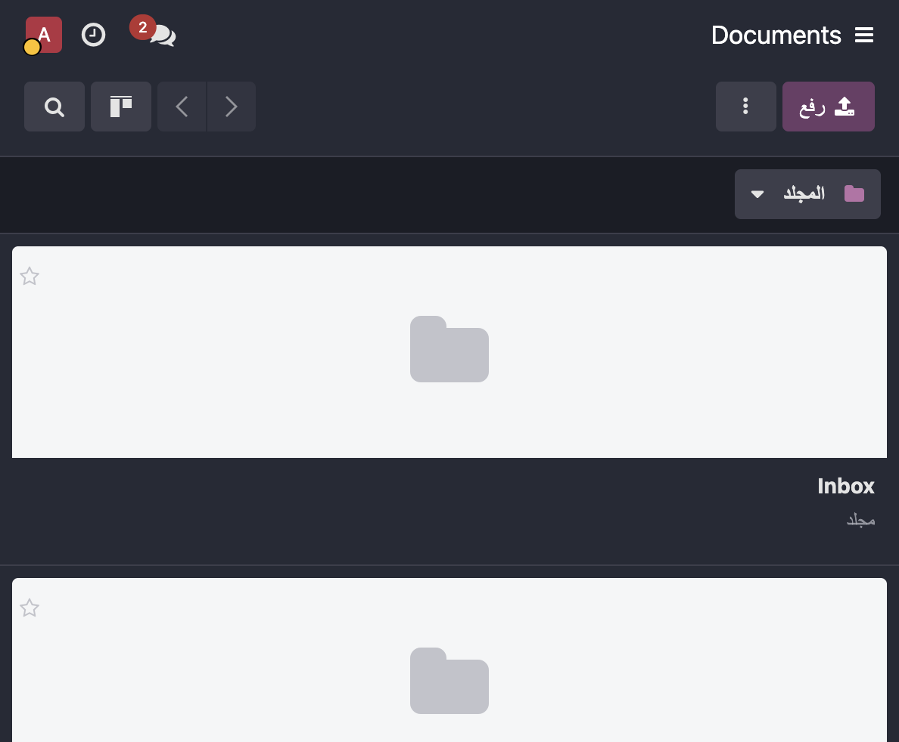
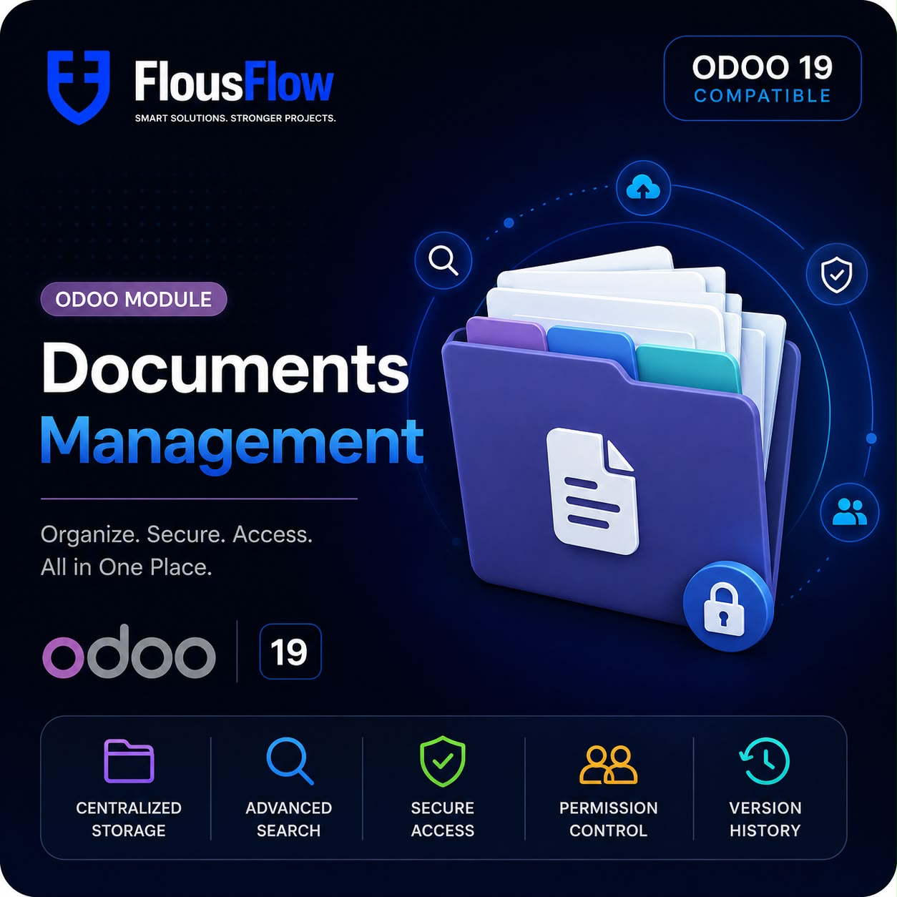
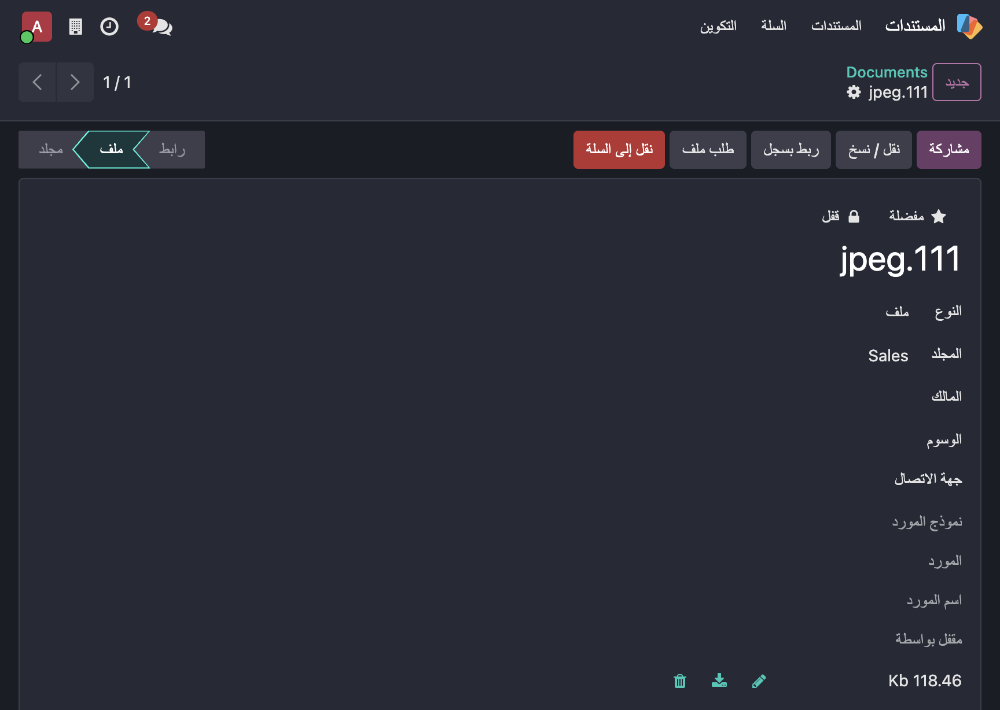
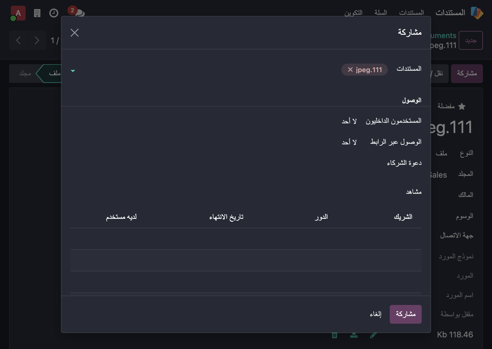
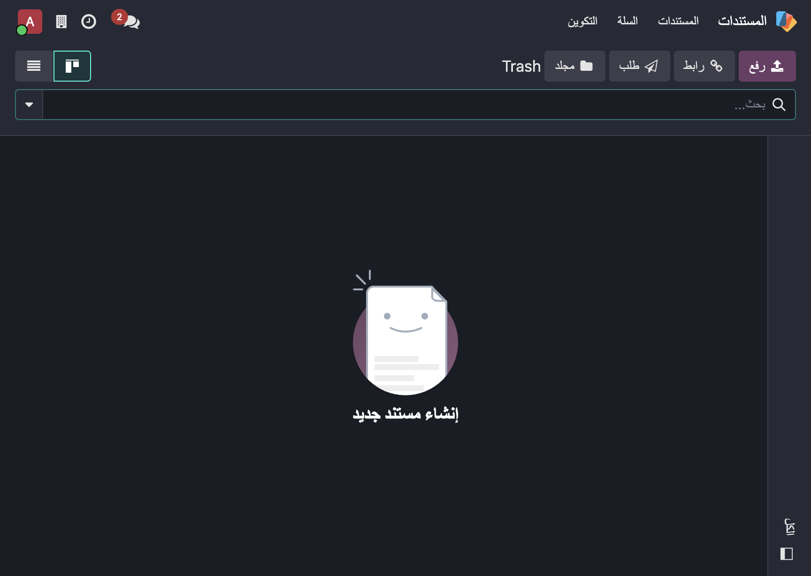
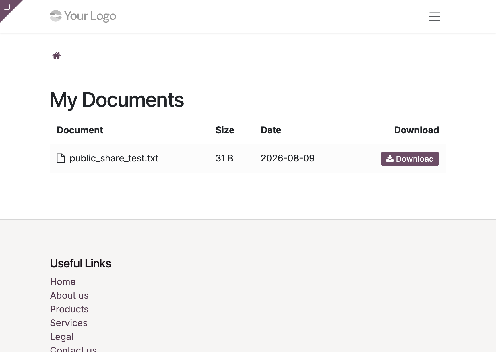

Folders, files, URLs, tags, granular permissions, sharing, favorites, lock/unlock, email aliases and a portal page — all in a native kanban view, functionally equivalent to the Enterprise Documents app.





Nested folders with parent_path, preview thumbnails,
owner avatars, colored tags, favorites and a Folders search panel.
Editor / Viewer / None with folder inheritance, owner override, per-partner sharing with expiration and manager override — enforced by record rules.
Set internal & link rights and invite partners with roles and expiry dates in one dialog.
Soft delete, configurable retention days, restore and a confirmation-protected permanent delete.
Give every folder an inbox — documents arrive by email.
Check out documents so only the locker or a manager can edit.
Ask a partner to upload a file (with an activity), bulk move/copy documents between folders (deep copy for folders), or link any document to any record in Odoo.

/my/documents —
partners see and download shared documents (token-protected).
Install like any Odoo module. It only depends on standard apps:
base, mail, web,
contacts and portal. A complete
Arabic (ar_001) translation is included.